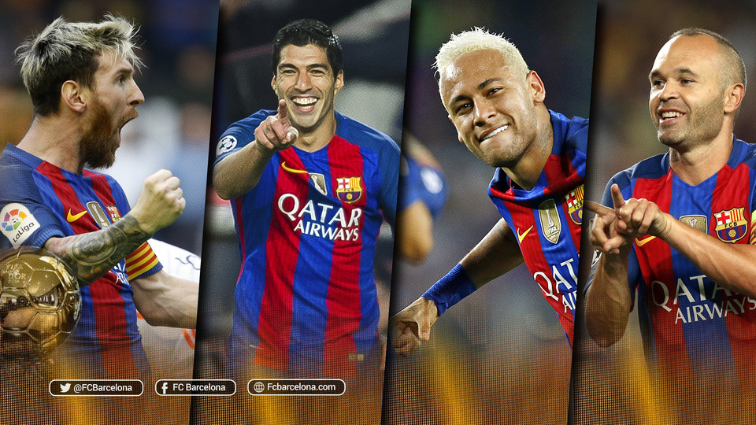

FC Barcelona powstała dzięki Hansowi Gamperowi. To właśnie on był założycielem jednego z
najsławniejszych klubów piłkarskich świata, jakim jest Barça. FC Barcelona została
założona 29 listopada 1899 roku z inicjatywy ww. miłośnika futbolu i kilku Anglików.

Messi | Neymar | Suarez | Iniesta
Był to pierwszy klub w mieście, w którym piłka nożna była jeszcze niezbyt znanym
sportem. FC Barcelona od razu stała się symbolem Katalonii i jej mieszkańców, którzy po
dzis dzień wierza, że uzyskają "wolność". Pierwszy nieoficjalny mecz odbył się przeciwko
Anglikom, którzy wygrali 1:0. Rok później odbył się pierwszy mecz derbowy Barcelona -
Espanyol, zakończył się on bezbramkowym remisem. W tym samym roku Barça po raz pierwszy
zdobywa Puchar Katalonii. Dwa lata później, w Madrycie powstał klub piłkarski - Real.
Jak się okaże, będzie to największy WRÓG FC Barcelony. W tym samym roku, własnie z ta
drużyna, Barca rozegrała mecz w walce o Puchar Hiszpanii i wygrała 3:1. Oprócz tego
zdobywa drugi Puchar Katalonii. Ten sam wyczyn piłkarze ze wschodniej Hiszpanii
powtórzyli w 1905, pokonując Espanyol. Trzy lata później, swoją karierę piłkarską
zakończył Hans Gamper. Nie znaczyło to jednak, że pożegnał się z klubem. Wręcz
przeciwnie - został jego prezydentem. Rok (dwa) wcześniej, udało mu się jeszcze zdobyć
ze swoim klubem dwa Puchary Sabadell, a także Puchar Salut (1906 i 1908).
W 1909 roku powstał piąty już w historii Barcelony stadion - The Carrer Industria
Ground. Tym razem był on własnością klubu. Poprzednie cztery: Former Bananova Velodrome,
The Hotel Casanovas Ground, The Carretera D'Horta Ground, The Carrer Muntander Ground,
Barcelona musiała dzielić z lokalnym przeciwnikiem - Espanyolem. Kolejny puchar do
swojej gabloty piłkarze Barcelony wstawili w roku 1910, po wygraniu Pucharu Hiszpanii.
Finałowym przeciwnikiem Barçy był Espanyol, a mecz zakończył się wynikiem 3:2. Kolejne
dwa trofea, którymi również były Puchary Hiszpanii, trafiły do stolicy Katalonii w
latach 1912 i 1913. Od roku 1910, do klubu byli przyjmowani członkowie, którzy nie byli
związani jednak ani z zarządem, ani z grą. Po prostu "najwierniejsi" kibice, nazywani
Socios.
Tuż po rozegraniu finałowego meczu o Puchar Hiszpanii, do Barcelony przejeżdzają
piłkarze z Anglii. Wszystkie trzy mecze wygrywa drużyna z ojczyzny futbolu, odpowiednio:
2:0, 4:0 i... 10:3. Zapomniałem też wspomnieć, że w latach 1910, 1911, 1912, 1913
Barcelona zdobywała również Puchar Pireneos Oriental. Rok 1916 może się kojarzyć bardzo
miło (kto go jeszcze pamięta?). Otóż własnie Anno Domini 1916 Barcelona pokonuje na
swoim stadionie Real Madryt wynikiem 3:0. Do szefostwa Barçy trafia kolejny Puchar
Katalonii. W Barcelonie pojawia się Ricardo Zamora. W latach 1919-1922, galerie trofeów
zasiedlają kolejne Puchary Katalonii. W roku 1922 do użytku zostaje oddany stadion Les
Corts, nazwany przez kibiców "Katedrą futbolu", gdyż mógł pomieścić 30 tysięcy widzów. W
Hiszpanii co raz gorzej mają się sprawy, i wojna domowa tuż tuż. W sezonach 1924 do 1928
Barcelona zdobywa kolejne Puchary Katalonii. W roku 1925 zostaje zamknięty na cztery
lata stadion Barcelony, a to z powodu gwizdów w czasie grania hiszpańskiego hymnu. Lata
trzydzieste można także wspominać z trimfu Barçy w Pucharze Hiszpanii (1920, 1922, 1925,
1926, 1928).
W 1929 roku rozegrano pierwszą serię zmagań o tytuł mistrza Hiszpanii. Wygrała
oczywiscie Barcelona, Real był drugi. W rozgrywkach brało udział 10 drużyn. Lata
trzydzieste to następne wygrane Mistrzostwa Kalanonii (1930, 1931, 1932, 1935, 1936,
1938), a także początek "zdradzieckich" transferów. W 1933 roku Josep Samiiter
przechodzi do Realu, po to by dwa lata później pokonać swój były klub... 8:2. W 1936
roku wybucha wojna domowa. Po jednej stronie republikanie, po drugiej nacjonaliści z
generałem Franco na czele. W 1938 roku odbywa się zamach na siedzibę Barcelony w wyniku
czego zniszczeniu ulegają wszystkie trofea Barcelony. Klub jednak nie stracił wszystkich
pieniędzy i mógł istnieć dalej. Rok później kończy się wojna domowa. W roku 1942 do
Katalonii trafia kolejny Puchar Hiszpanii. Rok później dochodzi do skandalu, gdyż Barça
w dwumeczu przegrywa z Realem... 11:4. Stało się tak za sprawą policji i "sędziego" z
Madrytu. Rok 1945, to upragniony drugi tytuł Mistrza Hiszpanii. Do gabloty z trofeami
trafia także Złoty Puchar. Rok później Barça zdobywa pierwszy SuperPuchar Hiszpanii w
ogóle w całej historii. Stało się tak po wygranym meczu z Athletic Bilbao 5:4.